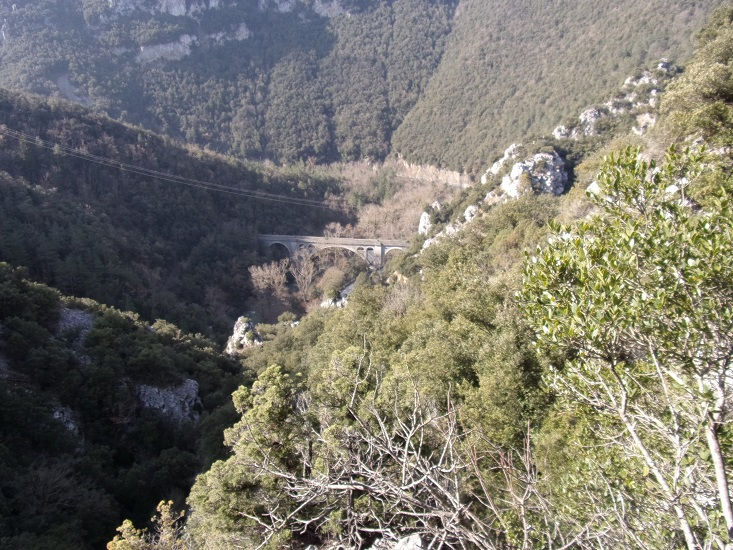

Un chemin d'escalade a été aménagé au bout du cap de fer. Le cap de fer est une barrière rocheuse au sud de St Martin lys (atteint les 1045 mètres du coté du Col de St Martin et descend jusqu'à l'Aude, juste coupée une fois par le passage du Pas du Taïchou)
Sur le chemin de Planèses juste avant de passer le pont de l'âne se trouve cette paroi rocheuse des plus impressionnantes (l'extrémité du Cap de Fer).
Extrémité du cap de fer, au bord de l'Aude
Sur une largeur d'une 15ène de mètres, la paroi fait une sorte de muraille jusqu'à l'Aude qu'il a fallu creuser pour pouvoir la traverser.

Le chemin de Planèses creusé dans la paroi du cap de fer
Lors de la pré-étude sur le tracé de la future voie ferrée, elle fut percée par une galerie exploratoire.

pré-tunnel du ravin de la Borde
Récemment (1997), des aménagements ont été réalisés sur les parties les plus raides de ce "mur" de façon à en faciliter l'escalade, des 2 cotés de la paroi.

Via Ferrata du Cap de Fer
Plusieurs sites web montrent des vues depuis la via ferrata qui a été ainsi aménagée, par exemple : Via Corda de St Martin Lys
Les 2 photos suivantes ont été proposées par Oxygen Aventure
(Tél : 06 82 69 83 00 / 04 30 63 83 12 - www.oxygen-aventure.com)

Vue du pont ferroviaire de Rebuzo depuis la via ferrata

Tyrolienne sur le ruisseau de La Borde
Le Ruisseau de La Borde longe la paroi sud du cap de fer, il passe par Artosoul et dévale en cascades successives jusqu'à l'Aude, le plus souvent à sec, même si des résurgences peuvent apparaître au cours de son parcours


Gorges du ruisseau de La Borde

Vue vers le nord : village de St martin Lys, le Quirbajou (la montagne arrondie au fond qui borde les gorges de la Pierre-lys
Vue vers l'ouest' : viaduc du Rebuzo, la route RD 117 vers Axat et l'Aude

Vue vers l'ouest' : viaduc du Rebuzo, la route RD 117 vers Axat et l'Aude

Gros rocher en équilibre sur 2 points d'appui

Roche creusée par l'écoulement de l'eau

Petit rocher en équilibre

Paroi rocheuse rose (lichen ?) à la remontée de la tyrolienne

Aplomb rocheux sur le ruisseau de la Borde


Petite grotte de la via ferrata
l'entrée cachée par les feuillages, la première salle, le plateau en équilibre, la deuxième salle et sa sortie
La deuxième salle continue par une cheminée que je n'ai pas suivie
Si vous trouvez un porte-clé Obelix dans cette grotte, c'est le mien...
Mon frère aîné, encore adolescent, faisait parti d'un club de spéléologie, aussi pendant une certaine période nous avons été pris d'une frénésie de recherche de toute cavité pouvant exister autour du village.
Nous avons sollicité notre grand-père pour nous montrer toutes les grottes qu'il connaissait. Outre le réseau de cavernes du Gal qu'il nous a permis de découvrir, il nous a mené également à la grotte qu'il appelait le "chapeau de Napoléon".
En remontant le ruisseau de la Borde et en scrutant chaque trou dans la montagne, nous avons fini par retrouver une cavité assez profonde pour contenir une énorme concrétion au sol, pas très haute, mais très large qui, sur le moment, m'a plus rappelé le chapeau d'un champignon que celui de Napoléon. Mais mon grand-père était si heureux d'avoir su retrouver cette cavité oubliée que je n'ai pas osé le contredire... (photos à suivre)